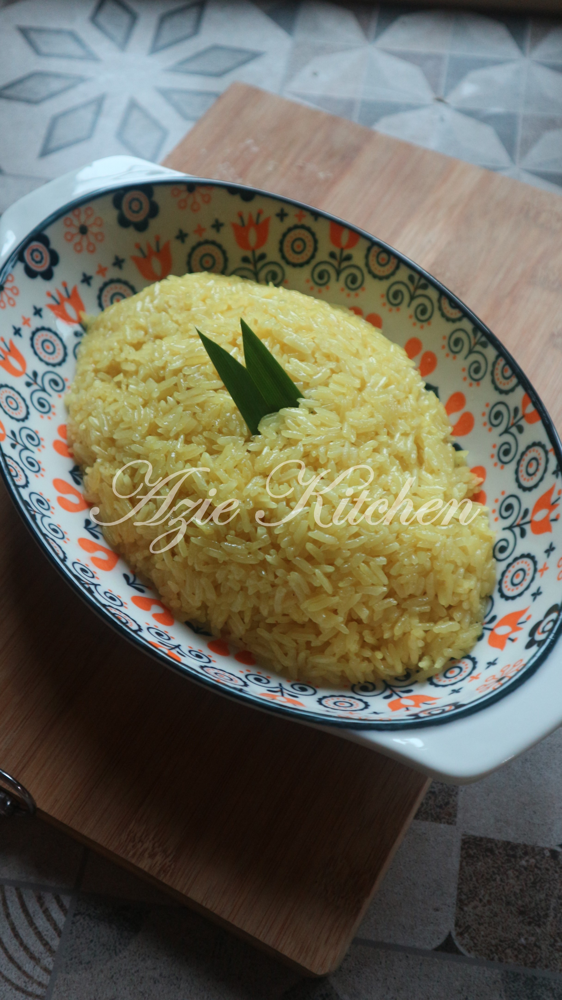
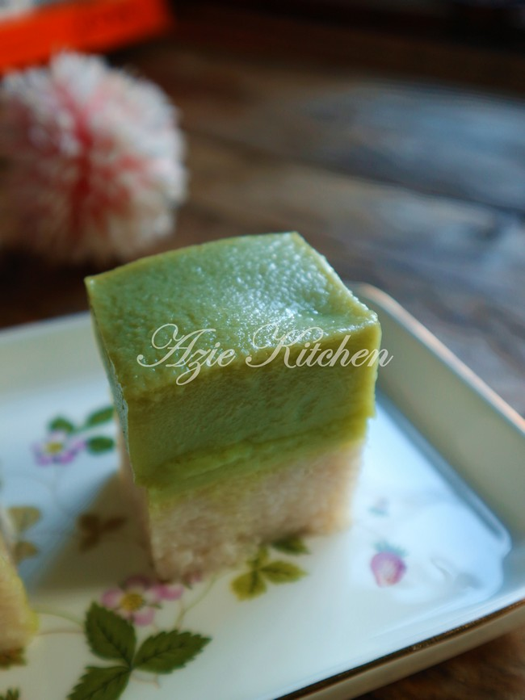
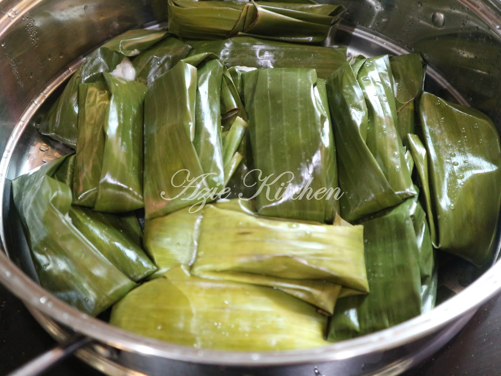

Pulut Kuning Lembut Cantik Berkilat
Pulut kuning lembut cantik berkilat memang lembut, lagi lah sedap. Makan bersama rendang ayam atau daging bersama keluarga tersayang lagi sedap.

Kuih Seri Muka Istimewa
Rasa yang sangat memuaskan hati bukan sahaja kejadiannya cantik tapi rasanya memang terbaik dan ianya sangat sedap dan sangat sesuai dengan selera semua orang.

Tepung Bungkus Kelantan Yang Sangat Nostalgia
Tepung bungkus merupakan sejenis kuih tradisi yang diperbuat daripada tepung dan berinti kelapa. Kuih ini dibungkus dengan daun pisang dan rasanya sangat lembut dan berlemak.